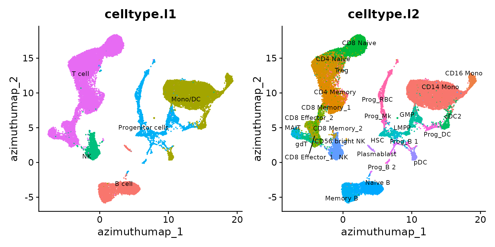
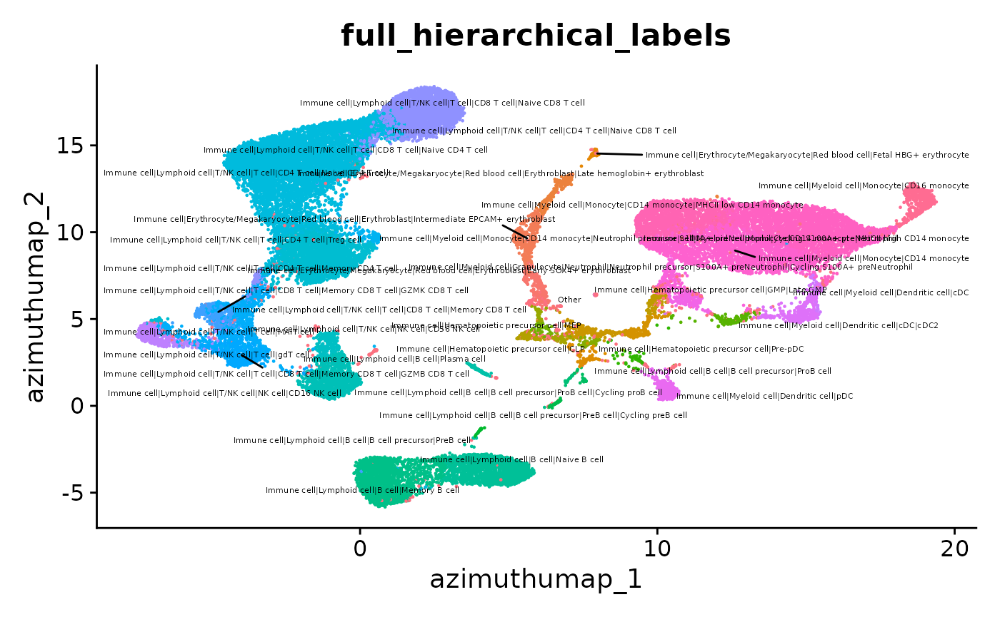
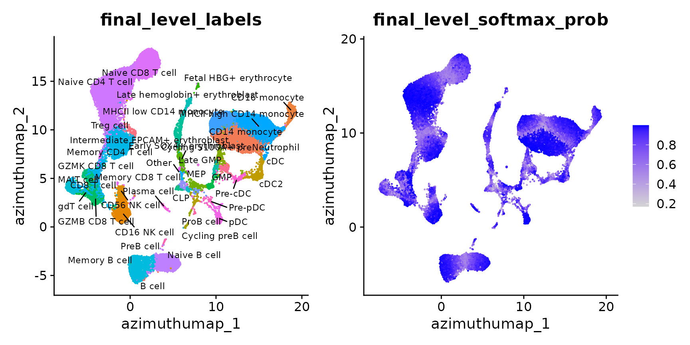
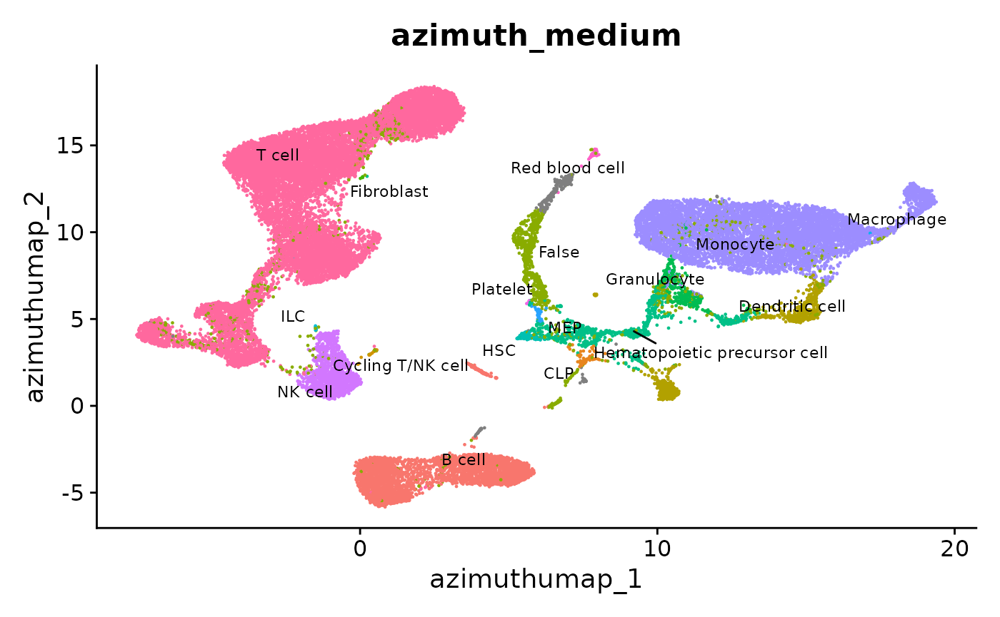
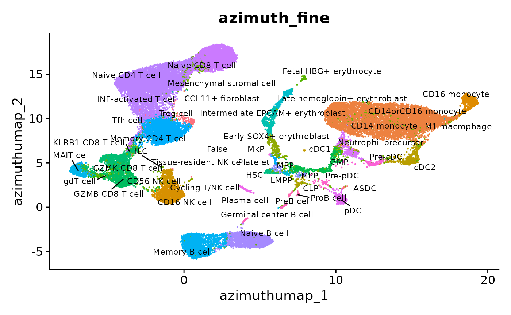
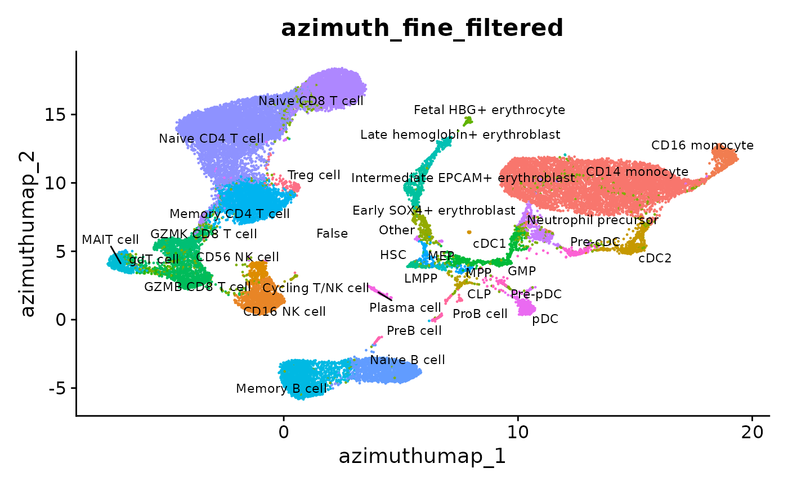
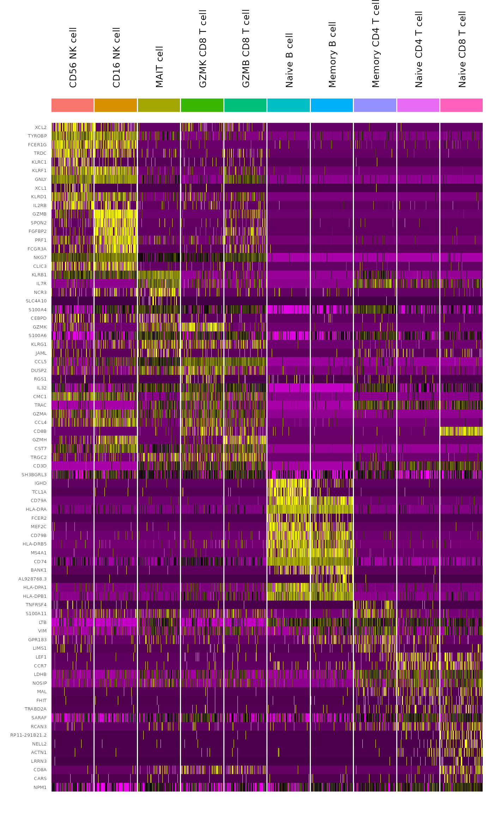
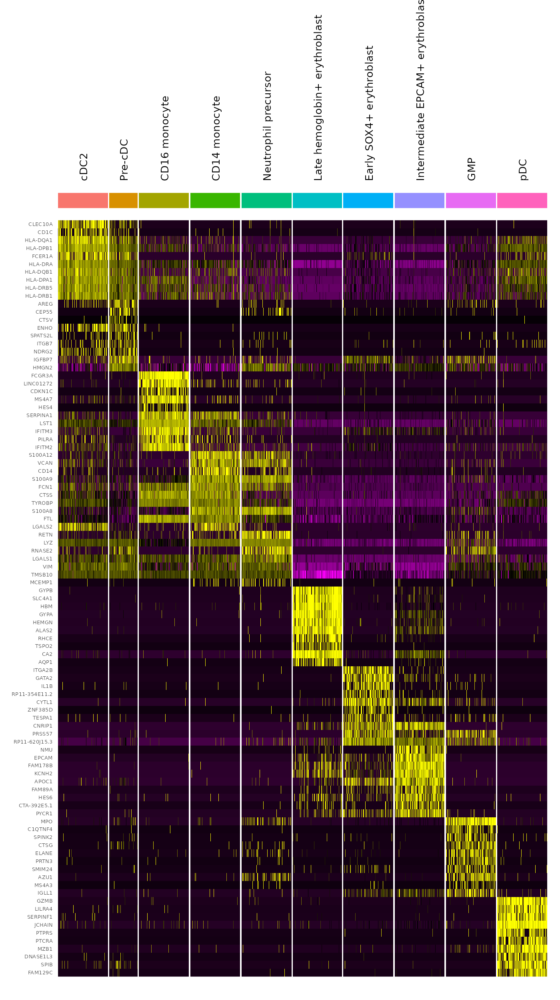

quickstart_vignette.RmdPanAzimuthWebAPI can be installed from Github using the following commands:
if (!requireNamespace("devtools", quietly = TRUE)) {
install.packages("devtools")
}
devtools::install_github("rsatija/PanAzimuthWebAPI")For this vignette, we will demonstrate annotating a dataset of human bone marrow mononuclear (BMNC) cells from eight individual donors produced by the Human Cell Atlas. This dataset is available through SeuratData.
library(Seurat)
library(SeuratData)
library(PanAzimuth)
bmcite <- InstallData("bmcite")
bmcite <- LoadData("bmcite")The CloudANNotate function runs Pan-human Azimuth cell type predictions on a Seurat object via a cloud-based API deployed on AWS, and returns results stored in the object’s cell-level metadata.
bmcite <- CloudANNotate(bmcite, ip = "34.222.135.233")
bmcite## An object of class Seurat
## 17034 features across 30672 samples within 2 assays
## Active assay: RNA (17009 features, 2000 variable features)
## 2 layers present: counts, data
## 1 other assay present: ADT
## 2 dimensional reductions calculated: spca, azimuth_umapYou can visualize the predicted cell type labels on azimuthumap, the UMAP reduction of the embedding that the PanAzimuth model learns on the data based on cell type representation.
For example, below are the original cell type annotations visualized on azimuthumap:
p0 <- DimPlot(bmcite, group.by = "celltype.l1", label.size = 3, repel = T, label = T) + NoLegend()
p1 <- DimPlot(bmcite, group.by = "celltype.l2", label.size = 3, repel = T, label = T) + NoLegend()
p0 | p1
Pan-human Azimuth returns predictions in multiple formats, as well as softmax probability scores to estimate model confidence:
full_hierarchical_labels: The full predicted label for each cell, where ‘|’ delimits each hierarchical levellevel_zero_labels: The most broad level of the full hierarchical labelfinal_level_labels: The most granular level of the full hierarchical labelfinal_level_softmax_prob: The model’s predicted probability for each cell’s assigned final_level_label, ranging from 0 to 1In addition, we include the full_consistent_hierarchy flag to indicate whether if the full hierarchical label is valid according to our internal cell type hierarchy.
# All cell-level metadata that is returned
colnames(bmcite[[]])## [1] "orig.ident" "nCount_RNA"
## [3] "nFeature_RNA" "nCount_ADT"
## [5] "nFeature_ADT" "lane"
## [7] "donor" "celltype.l1"
## [9] "celltype.l2" "RNA.weight"
## [11] "full_hierarchical_labels" "level_zero_labels"
## [13] "final_level_labels" "final_level_softmax_prob"
## [15] "full_consistent_hierarchy" "azimuth_broad"
## [17] "azimuth_medium" "azimuth_fine"
## [19] "azimuth_label"The full_hierarchical_label for each cell provides highly detailed information, but may be difficult to interpret visually compared to level-wise labels.
p2 <- DimPlot(bmcite, group.by = "full_hierarchical_labels", label.size = 1.5, repel = T, label = T) +
NoLegend()
p2
p3 <- DimPlot(bmcite, group.by = "final_level_labels", label.size = 3, repel = T, label = T) + NoLegend()
p4 <- FeaturePlot(bmcite, features = "final_level_softmax_prob")
p3 | p4
We also postprocess our predictions to provide labels at three consistent levels of granularity for easy handling, marking any cell with an invalid full hierarchical label (based on full_consistent_hierarchy) as False.
azimuth_broad: Corresponds to level_zero_labels (i.e. Immune cell)azimuth_medium: Medium level of granularity (i.e. T cell)azimuth_fine: High level of granularity (i.e. Memory CD4 T cell)For azimuth_medium and azimuth_fine, labels have been adjusted to return labels at different levels in the hierarchy to be consistent with common understandings of cell type granularity. This means that for a certain number of cells, an azimuth_medium and/or azimuth_fine label could be more granular than its initial prediction. In such cases, these labels are likely to be an accurate description of the cell, as we use internal calculations based on probability values returned by the model, but should be handled with caution for more in-depth or formal analysis.
p5 <- DimPlot(bmcite, group.by = "azimuth_medium", label.size = 3, repel = T, label = T) + NoLegend()
p5
p6 <- DimPlot(bmcite, group.by = "azimuth_fine", label.size = 3, repel = T, label = T) + NoLegend()
p6
To remove the number of labels displayed, you can filter labels with less than a certain number of cells using PrepLabel.
bmcite <- PrepLabel(bmcite, "azimuth_fine", "azimuth_fine_filtered", cutoff = 20)
p7 <- DimPlot(bmcite, group.by = "azimuth_fine_filtered", label.size = 3, repel = T, label = T) +
NoLegend()
p7
The make_azimuth_QC_heatmaps function allows you to easily explore the quality of predicted labels by creating expression heatmaps by predicted cell type, with optional parameters for improved visualization:
final_name: Name of metadata columns to group cells by (default is azimuth_fine)min.final.group: Minimum number of cells under a cell type to be displayedmax.ids.per.plot: Number of cell type labels displayed per plotreorder: Flag to indicate whether to reorder cell types by transcriptional similaritycells.order: Cell names to specify order of cells (i.e. by softmax probability)save_folder_path: Save plots as PNG files under specified folder pathPlots are saved by azimuth_broad categories by default, with the exception of immune cell types grouped separately by lymphoid or myeloid/erythroid subpopulations.
plots <- make_azimuth_QC_heatmaps(bmcite)
p8 <- plots[["Immune_Lymphoid cell_1"]]
p8
p9 <- plots[["Immune_Myeloid cell_1"]]
p9